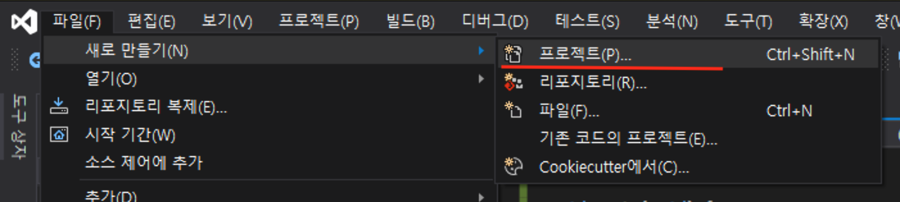
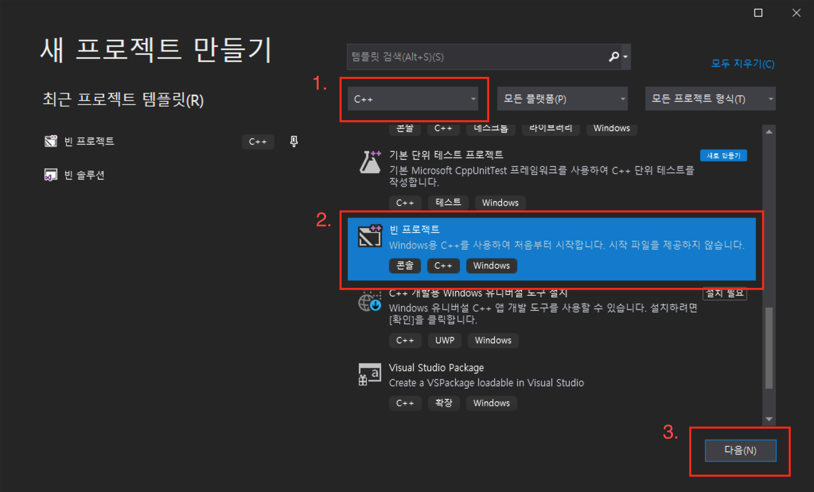
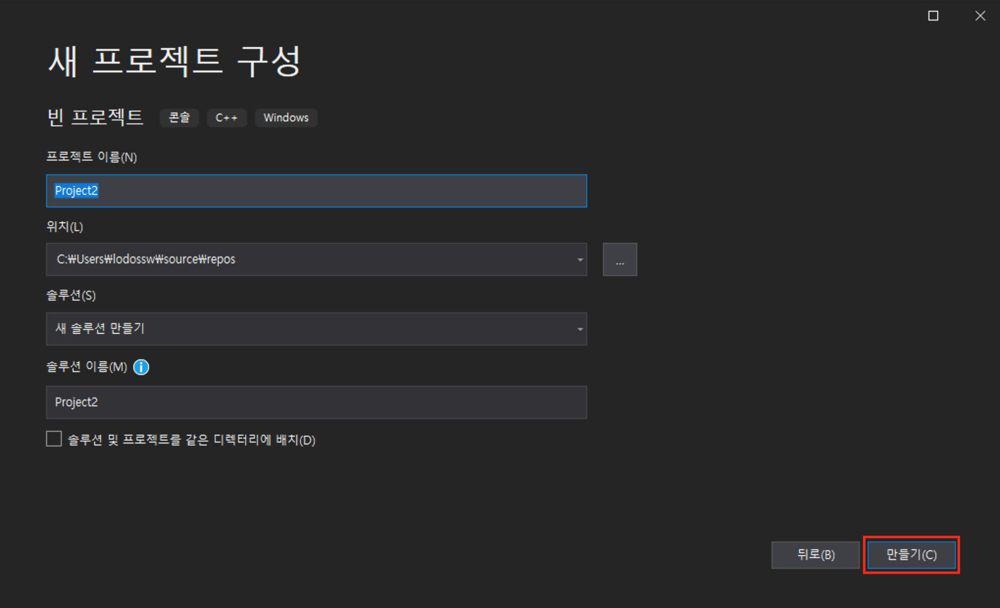
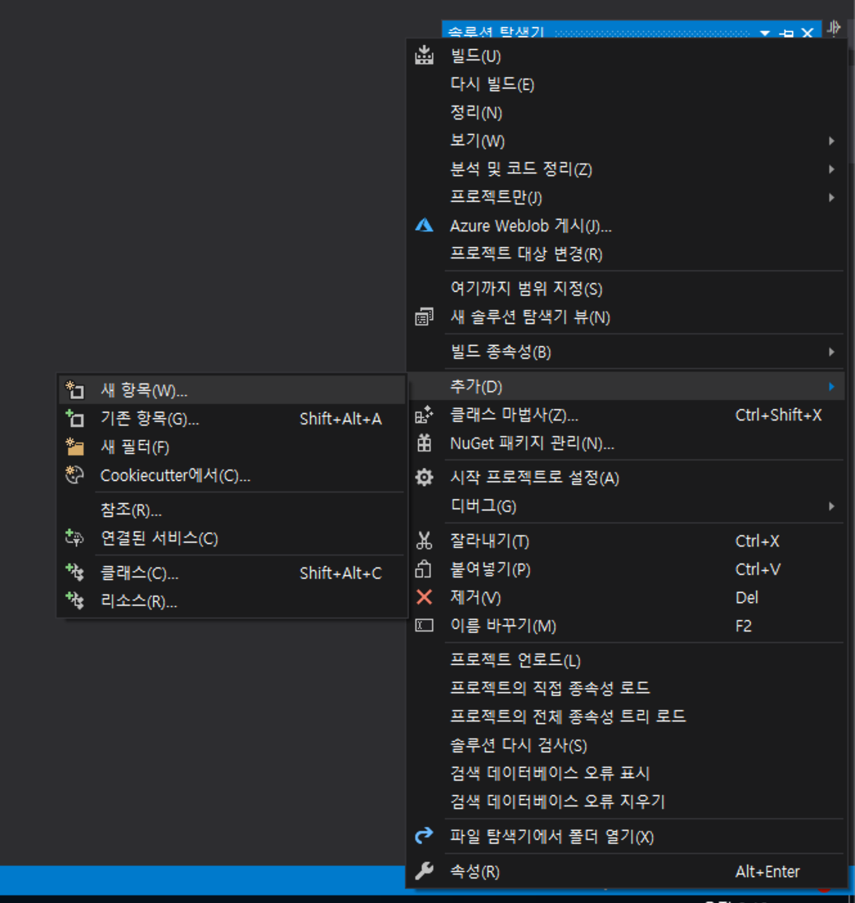
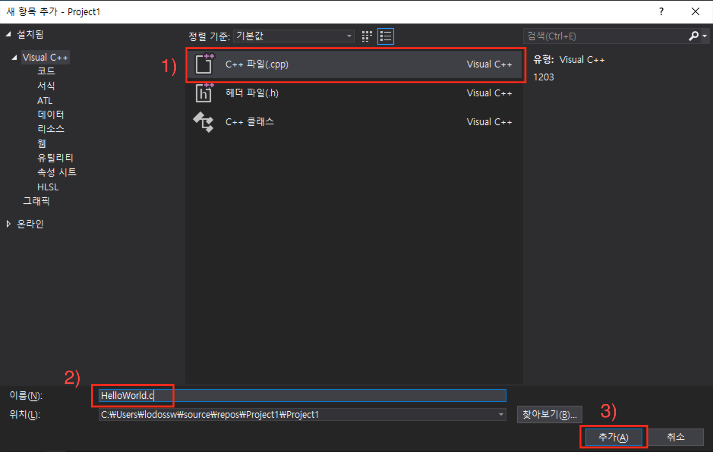
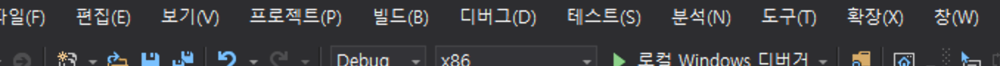

비주얼 스튜디오 2019 사용법
이번 강의는 VS2019를 이용하여 Win Console Application을 작성해보겠습니다.
나의 첫 C 프로그램 Hello World!!
1) 비주얼 스튜디오에서 "파일" => "새로만들기" => "프로젝트" 를 선택합니다.

2) "프로젝트만들기" 대화창에서 "모든언어" 를 "C++" 로 변경하고 "빈프로젝트"를 선택하고 "다음"을 클릭합니다.

3) 소스가 저장될 적당한 위치를 선택하고, "만들기"를 클릭합니다.

4) 솔루션 탐색기 에서 "프로젝트"명에 마우스 오른쪽 버튼 클릭 후 "새 항목 추가"를 선택합니다.

5) 항목 중 "C++ 파일 (.cpp)"를 선택하시고, 하단 파일명을 HelloWorld.c 로 변경 후 "추가" 버튼을 클릭합니다.

6) "솔루션 탐색기" 의 "소스파일" 폴더를 열어 HelloWorld.c 파일을 열고 아래의 코드를 입력해 줍니다.
#include <stdio.h>
int main() {
printf("Hello World");
return 0;
}
7) 입력이 완료 되었으면 비주얼스튜디오 상단에 "로컬 윈도우스 디버거"를 클릭하여, 결과를 확인합니다.

메인함수 (Main())의 다양한 종류
IDE나 컴파일러를 만든 회사마다 다양한 방식의 main함수가 존재하지만, 일반적은 표준 C (Ansi C)에서는 아래의 3가지 방식을 추천한다. https://codeforwin.org/2017/08/various-declarations-main-function-c.html
int main(void)
#include <stdio.h> int main(void) { printf("Hello World"); return 0; }int main(int argc, char * argv[])
#include <stdio.h> int main(int argc, char * argv[]) { printf("Hello World"); return 0; }int main(int argc, char ** argv)
#include <stdio.h> int main(int argc, char ** argv) { printf("Hello World"); return 0; }
메인함수를 통해 사용자의 입력 받기 ( int main(int argc, char ** argv) )
메인함수(main)의 소괄호 안에 있는 것들은 "변수"이며 우리는 이를 메인함수의 "인자"라고 부른다. 인자에 사용자 값을 받아서 출력하는 예제를 작성해 봅시다.
#include <studio.h>
int main(int argc, char ** argv) {
printf("입력값은 %s 입니다", argv[1]);
return 0;
}
!) 이 예제를 실행하는 방법은 실습으로 배워보도록 하겠습니다.
사용자 입력 받기 (scanf 함수)
main 함수를 통해 인자를 받는게 아닌 Standard IO 의 scanf() 함수로 입력을 받아보도록 하겠습니다.
#include <stdio.h>
int main() { //-- Application Starting Point
char name[30];
printf("이름이 무엇인가요? : ");
scanf("%d", name);
printf("안녕하세요? %s님!!!", name);
}
위의 코드는 비주얼 스튜디오에서 컴파일 에러를 발생시킵니다.
표준함수인 scanf()가 비주얼스튜디오에선 보안이슈로 depricated 되었기 때문입니다.
따라서 scanf() 함수를 scanf_s()로 변경하거나.
#define _CRT_SECURE_NO_WARNINGS 를 삽입하는 방식으로 해결하도록 합니다.
- scanf_s 사용
#include <stdio.h>
int main() {
char name[10];
printf("문자열을 입력하세요: ");
scanf_s("%s", name, 10);
printf("%s\n", name);
return 0;
}
- _CRT_SECURE_NO_WARNINGS 사용
#ifdef _MSC_VER
#define _CRT_SECURE_NO_WARNINGS
#endif
#include <stdio.h>
int main() {
char name[10];
printf("문자열을 입력하세요: ");
scanf("%s", name);
printf("%s\n", name);
return 0;
}
visual studio로 디버깅
!) 실습 입니다 ^^